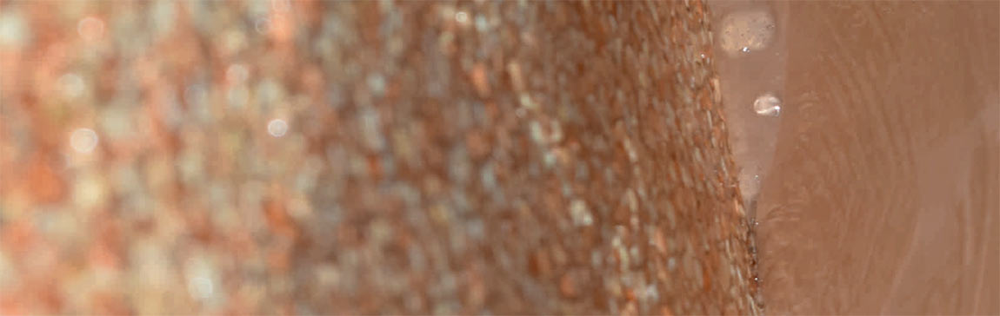
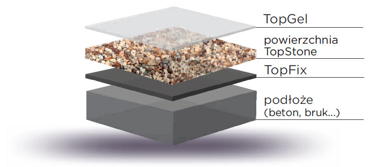
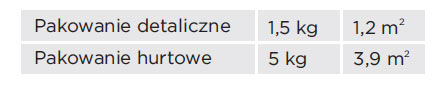
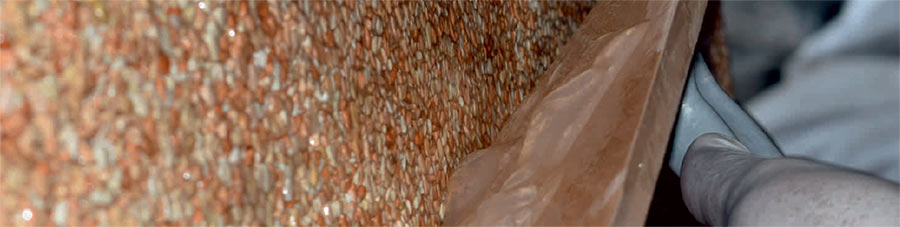
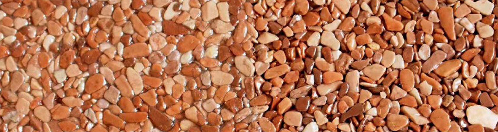
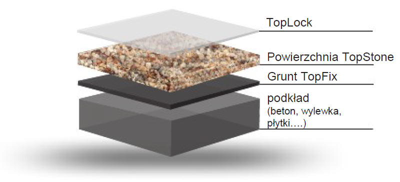
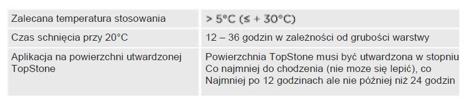
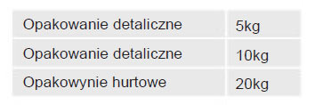

3 - składnikowy przeźroczysty epoksydowy żel, dla zamknięcia struktury powierzchniowej TopStone lub TopWall.
- Wysoka odporność na wodę
- Zamknięcie TopStone powierzchni na powierzchniach poziomych i pionowych
- Szybkie utwardzanie
- Niskie zużycie
- Po utwardzeniu powierzchni odporne na sole i inne substancje chemiczne
- Proste zamknięcie u warstw ukośnych zywice zamykajace 33- Wysoka odporność na ścieranie, wysoka przeźroczystość i odporność na promieniowanie UV

- Poziome i pionowe powierzchnie
- Pomieszczenia mokre (łazienki,prysznice ...)
1,65: 1: 0,14 (A: B: C),
pakowania 1,5 kg -wagowo- 0,89 : 0,54 : 0,08 kg
pakowania 5 kg -wagowo- 2,96 : 1,79 : 0,25 kg

- 1,25 do 2 kg / m według frakcji i płaskości powierzchni
- w frakcji 2-4 mm i 3-5 mm jest przewidywane zużycie 1,25 kg / m
- w frakcji 4-7 mm i 4-8 mm jest przewidywane zużycie 1,5 kg / m
W temperaturach> + 5 °C <+ 28 °C, w suchym miejscu, w oryginalnym opakowaniu. Okres gwarancji- popatrz na etykietę Produkt nie może zamarznąć !!!
Czas przetwarzania: 20 minut + 10 minut przerwy technologicznej.
Skład chemiczny - mieszanina żywicy epoksydowej ze specjalnie opracowanym systemem utwardzania.
Klasyfikacja - ADR. A9 i kol. C3. Szczegółowe informacje zawarte są w karcie charakterystyki. Zabiegi gaszenia ognia - suchy piasek, piana odporna na alkohole, CO, mgła wodna. NIE UŻYWAĆ WODY !!! 2
1. Wymieszać składnik A i składnik B.
2. Dodać składnik C, dokładnie wymieszać.
3. Pozostawić 10 minut - przerwa technologiczna- tworzy się żel.
4. Już po raz drugi nie mieszać !!! - Zastosować natychmiast, urabialność do 20 minut.
5. Nakładać szpachlą lub gumową pacą.

UWAGA! Po wymieszaniu i przerwie technologicznej bezpośrednio nakładać na powierzchnię. Po ponownym wymieszaniu grozi niebezpieczeństwo spontanicznej reakcji egzotermicznej.
Produkty systemu TopStone na ściany:
TopCleaner - rozpuszczalnik do czyszczenia narzędzi – bezzapachowy.
opakowanie 1 kg
opakowanie 5 kg
Paca gumowa odpowiedna do nakładania TopGel-żelu na uzamknięcie powierzchni systemu TopStone lub TopWall.

TopLock to materiał dopełniający systemu TopStone do zastosowania w wewnątrz
Zamknięcie porowatości powierzchni TopStone przy zachowaniu struktury powierzchni.

- na powierzchnie wykonane systemem TopStone
- w celu uniknięcia porowatości powierzchni i zapobiegnieniu osadzaniu się brudu
- do użytku wewnątrz na poziome i pionowe powierzchnie
- nie jest przeznaczony na cągłe działanie wody
- jednoskładnikowa masa na bazie akrylu w białym kolorze, po utwardzeniu warstwa jest przeźroczysta
- odporna na działanie promieni UV
- posiada właściwości elastyczne
- duża przyczepność do powierzchni
- przyjazna dla środowiska
- proste zastosowanie bez mieszania składników
Podczas aplikacji i utwardzania TopLock nie może dojść do bezpośredniego kontaktu z wodą oraz substancjami chemicznymi. Podkład nnie może zawierać rozpuszczalne w wodzie substancje. Dla ogrzewania wnętrz podczas stosowania nie używać gazowych lub olejowe palników i itp. produkujących w w miejscu realizacji CO i pare wodną, która ma negatywny wpływ na jakość powierzchni.


Podane zużycia mogą się różnić w zależności od konkretnych warunków. Dla frakcji kruszywa 2-4 mm zużycie wynosi średnio 0,8 kg/m2 dla grubości powierzchni TopStone 1 cm. Dla frakcji kruszywa 4-8mm zyżycie wynosi 1kg/m2 przy 1 cm grubości powierzchni TopStone.
Przechowywać w temperaturze > +5°C < +28°C, w suchym pomieszczeniu,w orginalnych opakowaniach. Gwarancja –patrz na etykiecie.
1. Przygotowanie powierzchni Topstone pod powłokę TopLock: Nowa powierzchnia – bez przygotowania, aplikować najwcześniej po 12 a najpóźniej po 24 godzinach, powierzchnia musí być utwardzona do chodzenia i nie może się kleić. Stara powierzchnia – oczyścić powierzchnię przykładowo szczotką z wodą lub parowym urządzeniem , wysuszyć i następnie aplikować TopLock.
2. Materiał TopLock jest jednoskładnikowy, aplikujemy wprost z dostarczanego opakowania tak, że materiał nanosimy na powierzchnię i rozcieramy specjalną silikonową pacą tak aby się wykrystylaizowała struktura powierzchni Topstone, otwory muszą być wypełnione materiałem TopLock. Czym mniej materiału, tym lepsza struktura i szybsze utwardzenie (żużycie średnio 0,8 – 1kg/m2 według frakcji kruszywa).
3. W przypadku zapotrzebowania, można po utwardzeniu nanieś kolejną warstwę.
4. Finalna powierzchnia musí być po utwardzeniu przeźroczysta a całej powierzchni – znak doskonałego utwardzenia.
UWAGA!!! Materiałl reaguje i utwardza się w kontakcie z powietrzem. Należy dbać o dokładne zamknięcie opakowania po aplikacji, włącznie z oczyszczeniem narzędzi wodą.
Materiał w żaden sposób niewpływa na mechanicznezywice zamykajace 9 właściwości powierzchni TopStone. Aplikacja materiału TopLock zapełni otwory powierzchni TopStone. Żużycie 0,8 – 1kg/m2 według frakcji kruszywa i równości powierzchni.